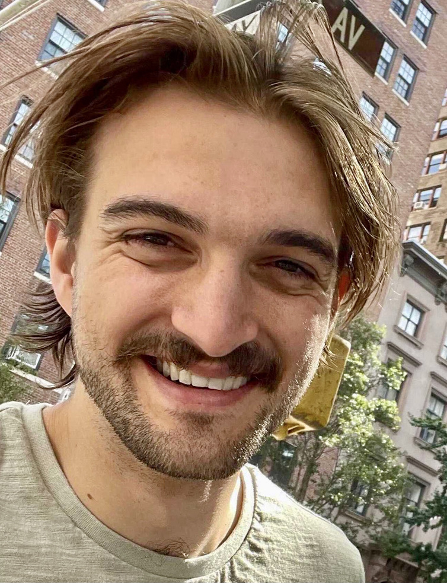

|

|
Nate Gruver
I am a machine learning PhD student at NYU Courant advised by
Andrew Gordon Wilson and working closely with
Kyunghyun Cho.
I received a BS/MS in computer science from Stanford University, where I worked with
Stefano Ermon,
Mykel Kochenderfer, and
Chris Piech.
I spent my last two summers working on generative modeling for applications in chemistry and biology at
FAIR. I've also spent time at
Waymo, Apple, and Google.
Starting October 2024 I will on the job market. I am primarily looking for research scientist positions, but
I will also be considering engineering roles and postdoc positions if the team is really exciting. Please send
me an email if you see a good fit!
Email /
Twitter /
Google Scholar
|
|
Research
I work on deep learning and generative modeling with the following themes:
- Understanding the relationship between large-scale pretraining and inductive biases
[1,
2]
- Generative modeling for protein and materials design
[3,
4]
- Combining generative models with uncertainty estimates
[5,
3]
|
Publications
Large Language Models Must Be Taught to Know What They Don't Know
Sanyam Kapoor*,
Nate Gruver*,
Manley Roberts,
Katherine Collins,
Arka Pal,
Umang Bhatt,
Adrian Weller,
Samuel Dooley,
Micah Goldblum,
Andrew Gordon Wilson,
Under Review
|
|
{kind=link}